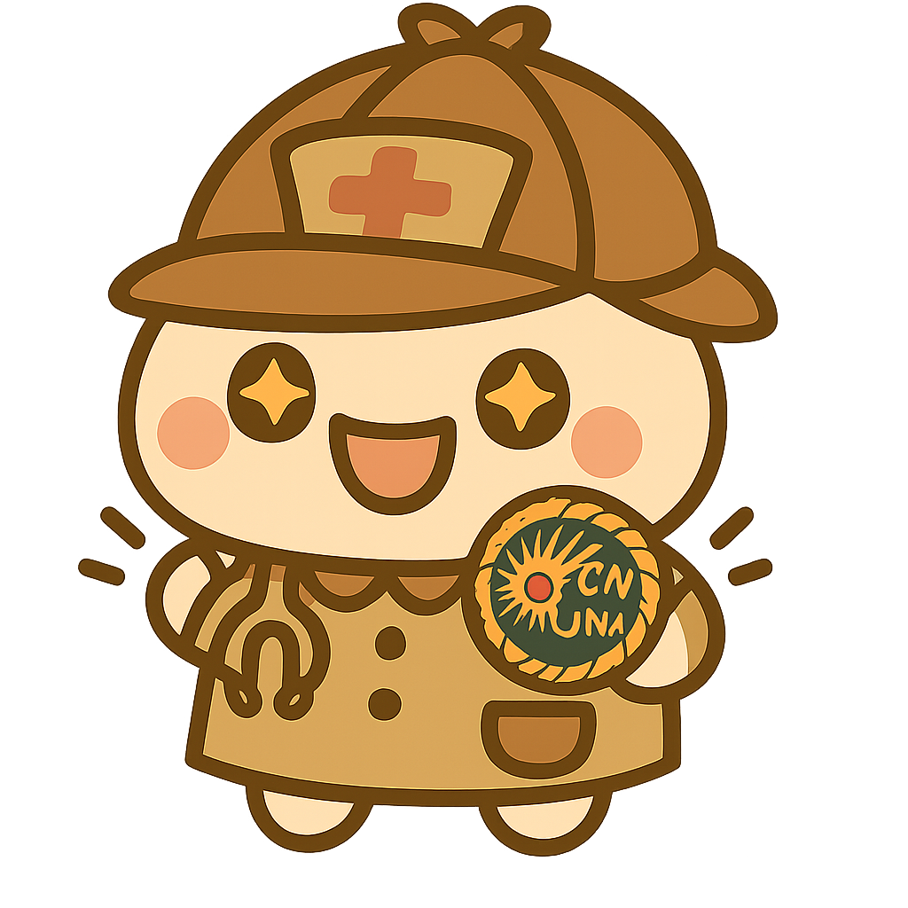
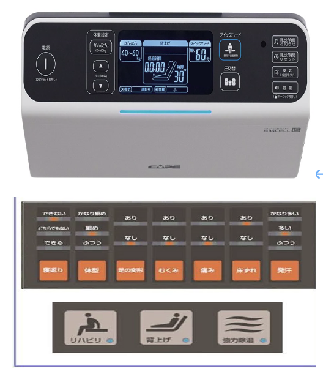
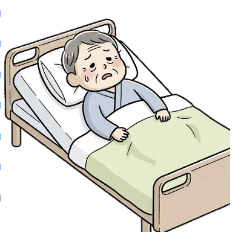
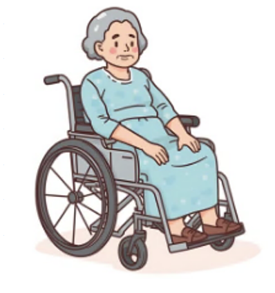

とせいくんの謎解き 第５弾
ぼくは とせいくん。
第５弾
へようこそ！ まずは
君のこと教えて
ね。
名前
所属
職種
次へ

今日はキミの推しチームを教えて欲しいんだ。
それぞれのチームの
意気込みは第４弾で紹介
しているから、みてみてね。
TMC出場チーム一覧
次へ
まずはTMCにも日常の看護の現場でも役立つ謎解きだ。
テーマ：
医療関連感染症（バルンカテーテル管理）
と
褥瘡予防対策
「今回はバルンカテーテル管理と褥瘡（じょくそう）予防について考えてみよう！」
「今日の担当患者さんは、
桜陶子さん（88歳）
。
もともとは自立して一人暮らししてたけど、
大腿骨頸部骨折で緊急入院して、手術後に整形外科病棟で療養中なんだ。」
🔍 なぞ①：バルンの位置、これでいいのかな？
術後2日目。まだ痛みが強くてリハビリが進まない陶子さん。
バルンカテーテルがついてるけど…どこがまちがってる？
次へ

なぞ②：高機能マットレス、設定はどうする？
陶子さんは体を動かすのがむずかしいから、高機能マットレスを使用中。
どれがまちがってるかな？
次へ

なぞ③：ADLの評価、どっちを見る？
入院前は歩けてた陶子さん。でも今は介助で車椅子移乗、ほぼベッド上で過ごしてるみたい。
どれがまちがってる？
次へ

なぞ④：車椅子移乗のときの注意！
リハビリで車椅子に移る陶子さん。どれがまちがってる？
次へ
とせいくんのまとめ
・バルンバッグは
低く、でも床にはつけない！
・マットレスは
圧切り替え型
で設定チェック！
・ADLは
“今の状態”
で評価！
・採尿袋は
空にして逆流防止！
・定期的な除圧＆皮膚観察で
褥瘡・MDRPU
を防ごう！
「ふぅ〜今日のなぞときもなかなか深かったね！
小さな“気づき”が患者さんを守る大きな力になるんだよ。
次のなぞも一緒に解いていこうね♪」
次へ
じゃあ、お待ちかね！推しチームの投票だ！
「１つ注意！くれぐれも
同じアカウントで何度も投票はしないでね。
名前を変えてもとせいくんにはお見通しだよ。
減点しちゃうから
一人一回の投票
にしてね。」
推しチームを選択
決定（フォーム送信）
次へ
TMCの紹介
ついに
12月20日 TMC開催
だ！！
みんなしっかり応援してね。
そして参加する人たち・サポートしてくれる人たち、応援してるよ！！
頑張ってね。